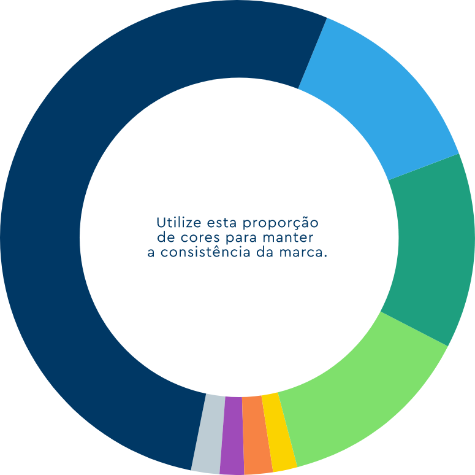

Institucionais
Nossas cores traduzem solidez, proximidade e inovação. Está em nosso DNA.
Azul
RGB - 00 56 101
CMYK - 100 60 10 53
HEX - #003865
Pantone® — 2955 C
Azul Claro
RGB - 50 166 230
CMYK - 85 21 0 0
HEX - #32A6E6
Pantone® — 2925 C
Verde
RGB - 30 159 127
CMYK - 87 0 67 11
HEX - #1E9F7F
Pantone® — 7724 C
Verde Claro
RGB - 127 224 108
CMYK - 52 0 82 0
HEX - #7FE06C
Pantone® — 7488 C
Clique nas cores para visualizar suas informações.
PANTONE®: cores de referência e para impressão especial. Sempre que possível, priorize seu uso em impressões offset e serigrafia.
CMYK: cores para impressão. Use quando não for possível optar pelas cores Pantone®.
RGB: cores para tela. Uso em meios digitais, como site e apresentações.
HEXADECIMAL: também para uso em meios digitais – identifica a cor de modo mais simples que o RGB.
Secundárias
Obs.: As cores da paleta secundária só devem ser usadas pontualmente nas peças. Elas fazem o papel de aquecer o layout.
Amarelo
RGB - 251 211 0
CMYK - 0 14 100 0
HEX - #FBD300
Pantone® — 116 C
Laranja
RGB - 247 131 68
CMYK - 0 70 100 0
HEX - #F78344
Pantone® — 165 C
Roxo
RGB - 159 75 185
CMYK - 48 80 0 0
HEX - #9F4BB9
Pantone® — 2582 C
Cinza
RGB - 189 204 212
CMYK - 17 4 6 4
HEX - #BDCCD4
Pantone® — 5455 C
Clique nas cores para visualizar suas informações.
PANTONE®: cores de referência e para impressão especial. Sempre que possível, priorize seu uso em impressões offset e serigrafia.
CMYK: cores para impressão. Use quando não for possível optar pelas cores Pantone®.
RGB: cores para tela. Uso em meios digitais, como site e apresentações.
HEXADECIMAL: também para uso em meios digitais – identifica a cor de modo mais simples que o RGB.
Não exagerar no roxo! Ela é a cor principal de Raízen.
Proporção das cores
“Observe sempre a diretriz de proporção de uso para que o conjunto das peças não se limite ao uso dos azuis e verdes; mas que também para que não fique exageradamente colorido."
Acessibilidade
Essas são as combinações de cores possíveis para garantir legibilidade de textos nos meios digitais.
Título branco em fundo azul
Texto corrido em branco no fundo azul.
Título verde claro em fundo azul
Texto corrido em verde claro no fundo azul.
Título amarelo em fundo azul
Texto corrido em amarelo no fundo azul.
Título laranja em fundo azul
Texto corrido em laranja no fundo azul.
Título cinza em fundo azul
Texto corrido em cinza no fundo azul.
Título azul claro em fundo azul
Título verde em fundo azul
Título azul em fundo branco
Texto corrido em azul no fundo branco.
Título roxo em fundo branco
Texto corrido em roxo no fundo branco.
Título verde em fundo branco
Título azul em fundo azul claro
Título branco em fundo verde
Título azul em fundo verde claro
Apoio em interfaces
Para delimitar áreas em sites e ambientes digitais, quando o uso das cores da paleta podem deixar o layout muito carrego.
O cinza da nossa paleta pode ganhar mais flexibilidade, e trazer hierarquia e leveza à aplicação.
# F2F5F6
# D7E0E5
# E5EBEE
# CAD6DD
CINZA RUMO
Exemplo:
DNA Rumo
Acreditamos no movimento como forma de evolução.
Um propósito que nos dá força e nasce da nossa essência: o movimento como nosso estado natural. Porque não é só sobre logística, é sobre a busca pela evolução de negócios, sonhos, culturas.
# F2F5F6
Nesse caso utilize essa gradação apenas no Cinza!